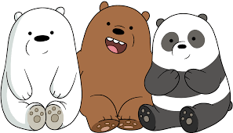

Pardo, Panda y Polar
Panda, Pardo y Polar son tres hermanos osos que viven en la bahía de San Francisco y se esfuerzan por encajar entre los humanos del siglo XXI, así que se han convertido en unos auténticos fans de las nuevas tecnologías. Este particular trío es el protagonista de 'Somos osos' ('We bare bears').
Se trata de una producción de la factoría Cartoon Network creada por Daniel Chong, un artista californiano que ha participado en el guion de películas como ''Del revés' ('Inside out'), 'Cars 2'Bolt', Bolt'así como en el cortometraje de Pixar 'Toy story of terror!', por el que, además, obtuvo un premio Annie, unos galardones que destacan las mejores producciones de animación.
En 'Somos osos', los protagonistas se han convertido en unos maestros de los selfis, son fans de la comida rápida y persiguen la fama por internet. Aunque son hermanos, cada uno de estos plantígrados pertenece a una especie distinta. El mayor, Pardo, es el que ejerce de protector y el que se muestra más sociable. Panda, el mediano, es un adicto:
se ha hecho vegano y se ha inscrito en una web para encontrar novia. Mientras, el pequeño, Polar, es totalmente impredecible y se desenvuelve igual de bien en la cocina como en las artes marciales.
Puedes ver un episodio haciendo clic aquí